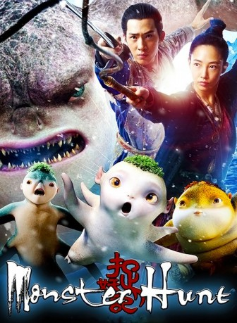

 
 IMDB-Wertung: 6.2 / 10
IMDB-Wertung: 6.2 / 10  Metascore:
Metascore: 
Hu Ba, der zukünftige König der Monster, will für ein friedliches Miteinander zwischen den Menschen und den fremdartigen Wesen sorgen. Keine leichte Aufgabe, denn während einige den Monstern durchaus aufgeschlossen gegenüberstehen, machen andere auf sie Jagd. Das Blatt könnte sich wenden, als ein Mann plötzlich Vater eines Monster-Sohnes wird…
Jahr: 2015
Dauer: 117 Minuten
FSK:
Land: China Studio: Alive Vertrieb und MarketingTonspuren:
Untertitel: Deutsch,
Auflösung: 1080p (1920x1080) Größe: 8427 MB
Genre: Action, Komödie, Abenteuer, Fantasy
Regisseur: Raman Hui
Drehbuch: H.B. Halicki
Soundtrack:
Darsteller:
 Wu Jiang als Luo Gang
Wu Jiang als Luo Gang Eric Tsang als Gao
Eric Tsang als GaoDatei: X:\HD-Eastern-Collections\Monster Hunt\Monster Hunt (2015, FSK, 1920x1080) 3D.mkv seit 25.10.2016
Festplatte: HD Eastern+Western
 Alle Filme aus Gruppe 'HD-Eastern-Collections\Monster Hunt'
Alle Filme aus Gruppe 'HD-Eastern-Collections\Monster Hunt'
(der aktuelle Film)